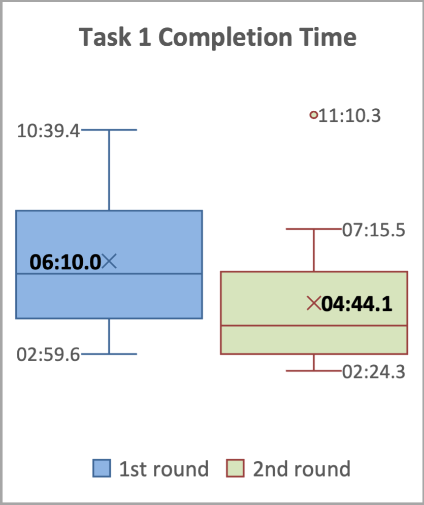
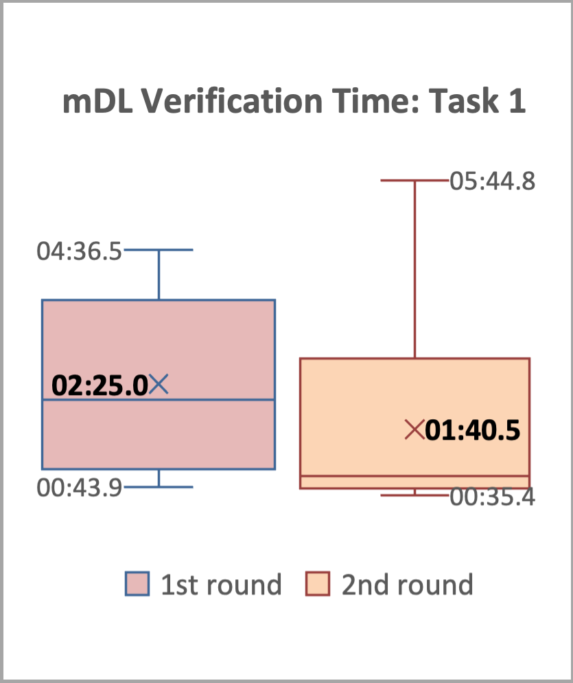
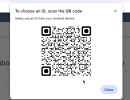
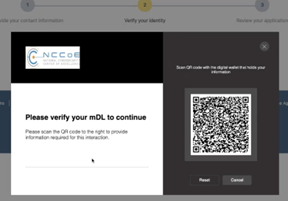
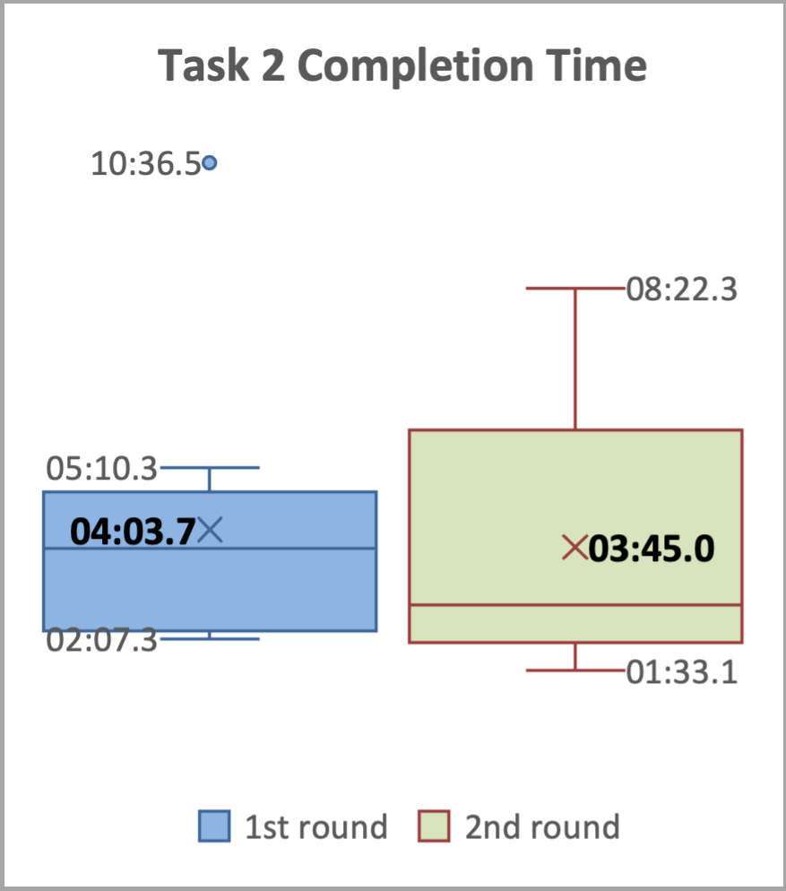
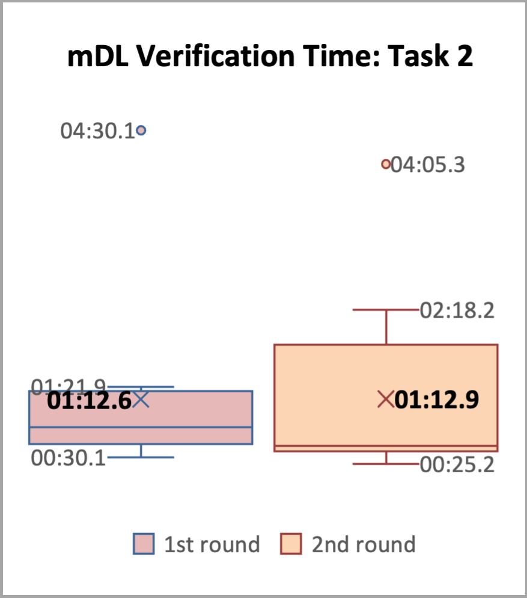
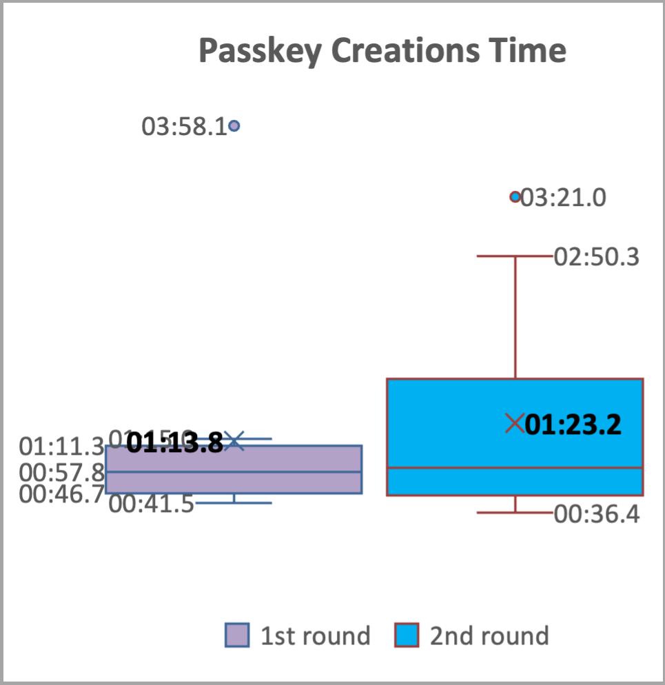

Usability Assessment Findings
This webpage summarizes the usability evaluation approach, highlights the key findings, and provides recommendations for improving UX and usability.
Evaluation Approach
A usability evaluation plan was developed by the Moderator and reviewed and approved by the project team as well as the NIST Research Protections Office (RPO) for human-subjects research. The key aspects of the evaluation approach are outlined below.
Participant recruitment and demographics
Research suggests that 10-15 participants are sufficient to uncover 95-97% of usability problems [iso9241], so we targeted 12 participants for this evaluation. A recruitment email was sent to NIST staff with information about the usability evaluation, and interested individuals contacted the Moderator to schedule a one-on-one session. Each 60-minute usability evaluation session was completed between July 18th and July 31st, 2025.
A total of 12 NIST staff (10 Federal Employees, 2 Associates) participated in the usability evaluation. None of the participants were involved in the NCCoE mDL project. They completed a background questionnaire upon arrival, providing information on their demographics and experience.
The participants had a diverse age range and sex distribution, with five females and seven males across various age categories. Participants self-reported a high level of technical proficiency and varying technology adoption tendencies, ranging from “Innovators” who adopt new technologies early to “Laggards” who adopt new technologies only when necessary.
Participants had varying levels of experience with identity verification methods, mDLs, and mobile phone platforms. For example, they were familiar with common identity verification methods like biometrics and ID checks but had less experience with liveness detection and selfie verification. One-third of the participants (n=4) reported having a mobile driver’s license (mDL). Among those with an mDL, two reported using it once, and two did not use it in the past 12 months. In terms of mobile phone usage, 11 participants reported using an iPhone, and five reported using an Android-based phone; four participants reported using both types of phones. Detailed participant demographics are listed below.
Age Group |
Sex |
||||||
|---|---|---|---|---|---|---|---|
18-29 |
30-39 |
40-49 |
50-59 |
60-69 |
Female |
Male |
|
Count |
2 |
3 |
2 |
4 |
1 |
5 |
7 |
Label |
Questionnaire Response options |
Count |
|
|---|---|---|---|
Technology Savviness |
Expert |
I can do all things that I want to do with technology without help from others. |
6 |
Advanced |
I can do most things that I want to do with technology and only need help occasionally. |
6 |
|
Average |
I have some knowledge about how technology works, but often need to ask for help to perform more advanced activities – such as to configure the privacy settings on my cell phone. |
0 |
|
Novice |
I have limited experience using technology and I don’t know much about how technology works. |
0 |
|
Technology Adoption Tendency |
Innovator |
I try the latest technologies as soon as they come out. |
2 |
Early adopter |
I follow technology trends. |
4 |
|
Early majority |
I let others work out the kinks first. |
3 |
|
Late majority |
I wait until my old technology dies. |
1 |
|
Laggard |
I only adopt new technologies when it’s required. |
2 |
Biometrics |
Confirmation code verification |
ID check |
In-person |
Liveness detection |
Selfie verification |
|
|---|---|---|---|---|---|---|
Count |
12 |
12 |
11 |
12 |
3 |
4 |
Tasks and scenarios
Two wallets were available within the timeframe for conducting the usability evaluations: Credential Manager (CM) and MATTR Kakapo Wallet (MATTR), referred to as CM and MATTR throughout this webpage, respectively. The wallets were implemented individually in two Google Pixel phones. To evaluate the user experience across these two wallet implementations, we designed two representative tasks. Task 1, Bank account application, was designed to assess how well the build supports a new customer applying for a checking account. And Task 2, Online access setup, was designed to assess how well the build supports the customer to access their bank account online after the account is approved. Participants used the demonstration NCCoE bank website and the wallets containing fictitious mDLs to complete the tasks. To protect participant privacy and maintain data anonymity, as required by human subject research protocols, we used fictitious names and information for the mDLs.
Each participant performed the set of two tasks with one wallet and then repeated the same set of tasks with the other wallet. To minimize any potential order effects, we counterbalanced the order of the wallets. Half of the participants (n=6) started with the CM wallet, while the other half (n=6) started with the MATTR wallet.
Data collection methods
A range of metrics and measures were used to assess the usability of the build. To gain a comprehensive understanding of the user experience, we used a combination of performance data, post-task questionnaires, and Moderator observations. Performance data, such as task completion rates, errors, and time on tasks, were collected via video recording and analyzed by the Moderator.
Satisfaction was measured using post-task questionnaires, which asked participants to rate the ease of use and their overall experience interacting with the build. The questionnaires asked participants to rate the following aspects of their experience using the scale: very difficult (1), difficult (2), neutral (3), easy (4), very easy (5):
Understanding the browser consent for mDL verification method
Understanding the consent on the wallet for mDL data presentment
Using mDL in the wallet for identity verification
Creating a Passkey as the authentication method [only asked in Task 2 post-task questionnaire]
Navigating the website’s UI
Using the website’s features
Completing the task
Additionally, the Moderator observed participants during the evaluation sessions to gather further insights into their user experience.
Evaluation procedure
Upon the participant’s arrival at the NIST main campus lab, the Moderator conducted a participant briefing, explaining the usability study, data recording procedures, and the participant’s rights, including their right to withdraw or take a break at any time. The Moderator also answered any questions the participant may have had.
A think-aloud protocol was employed to gather insight into the participants’ thought processes and behaviors while interacting with the application. Participants were encouraged to verbalize their thoughts, feelings, and experiences as they completed the tasks. The Moderator emphasized that the evaluation aimed to test the application, not the participant.
Following the briefing, each participant was assigned a unique ID and completed a pre-session background questionnaire. The Moderator then initiated the recording after obtaining the participant’s confirmation that they understood the recording would be video and audio.
Participants were randomly assigned to one of two wallet ordering conditions: CM or MATTR, referred to as Round 1 and Round 2. In Round 1, the Moderator provided the participant with the phone containing the assigned wallet. To ensure participants were comfortable with the device, the Moderator worked with the participant to familiarize them with the phone’s basic functions, such as unlocking and locating the camera, before proceeding with the tasks.
Participants then completed the two tasks using the NCCoE Bank website and the assigned wallet, with the Moderator providing guidance as needed. After completing each task, participants completed a post-task questionnaire to provide feedback. The same process was repeated in Round 2 with the other wallet.
Finally, after completing all tasks with both wallets, the Moderator conducted a post-session debriefing, asking participants about their experience with the usability evaluation and their thoughts on digital identity wallets.
Key Findings
We measured the efficiency, effectiveness, and user satisfaction on how well the NCCoE build supported the two representative user journeys: bank account application, i.e., registration; and online access setup, i.e., digital enrollment. Analyzing the results by round provides insight into both the usability and learnability of the application, highlighting how quickly users can learn from their experience and improve their performance over time. This section highlights the key findings from the usability evaluation.
Task 1 – Bank account application
Task 1 involved a user flow that can be broken into three major chunks: (1) entering user information–email, phone, social security number (SSN); (2) using an mDL to verify identity; (3) reviewing extracted mDL attributes and submitting application. Each participant completed Task 1 twice, once with each of the two wallets in Round 1 and Round 2. The results for Task 1 are summarized below:
Effectiveness
All participants successfully completed the task, despite a few participants encountering technical issues such as the system freezing or the browser QR code timing out before they could finish the activities on the phone, which required task restarting or resorting to a different path.
Assistance from the Moderator was minimal, with five assists across three participants in Round 1 and only one assist in Round 2. The assists involved resetting the frozen system, restarting the task, or guiding participants to an alternative path to complete the task.
One participant made two errors in Round 1, due to mistyping the social security number and selecting the wrong verification option (“Upload a picture of your driver’s license” was selected). No errors occurred in Round 2.
Efficiency
The average task completion time decreased from 6 minutes 10 seconds in Round 1 to 4 minutes 44 seconds in Round 2, as shown in Task 1 Completion and Verification Times.
The average time for the mDL verification sub-task decreased from 2 minutes 25 seconds in Round 1 to 1 minute 40 seconds in Round 2, as shown in Task 1 Completion and Verification Times.
The results indicate that participants quickly learned how to perform Task 1, with a 23.24% decrease in average task completion time and a 41.18% decrease in average mDL presentment time between the two rounds.
 |
 |
Satisfaction
The results, summarized in Post-Task 1 Ratings, indicate that participants generally found interacting with the application to be an easy and satisfying experience. The average ratings across all questions and both rounds were above 4 (corresponding to ‘easy’ and ‘very easy’), with one exception: the question regarding the use of mDL for identity verification in the wallet, which received an average rating of 3.67 for Round 1.
Round 1 |
Round 2 |
|||
|---|---|---|---|---|
Average |
Std Dev |
Average |
Std Dev |
|
Understanding the browser consent for mDL verification method |
4.42 |
0.51 |
4.58 |
0.51 |
Understanding the consent on the wallet for mDL data presentment |
4.67 |
0.49 |
4.33 |
0.98 |
Using mDL in the wallet for identity verification |
3.67 |
0.78 |
4.25 |
0.75 |
Navigating the website’s UI |
4.50 |
0.67 |
4.50 |
0.67 |
Using the website’s features |
4.42 |
0.67 |
4.58 |
0.51 |
Completing the task |
4.17 |
0.58 |
4.33 |
0.98 |
While the majority of participants (8 out of 12) rated this experience as ‘easy’ (4) or ‘very easy’ (5), a few participants reported more mixed experiences, with one rating it as ‘difficult’ (2) and three rating it as ‘neutral’ (3).
The mDL presentment sub-task involved many back-and-forth steps between the website on the computer and the mobile phone. Participants used the provided phone to scan a QR code displayed on the computer screen, then reviewed and agreed the consent on the phone. Then, they were asked to unlock the phone before the extracted attributes can be retrieved and displayed back on the website for participants to review and confirm. The Moderator observed that many participants experienced the browser QR code (see QR Code Presentation Comparison) “timed out” (roughly after about 40 seconds) as they were reviewing information on the phone and did not finish the sub-task promptly. A different QR code (see QR Code Presentation Comparison) was presented, which confused participants. Some thought it was for a different mDL and some thought they were repeating the same activity they just did.
 Initial Browser QR Code |
 New QR Code |
Task 2 – Online Access Setup
Task 2 involved a user flow that can be broken down into three major chunks: (1) using an mDL to verify identity; (2) creating a Passkey as an authentication method; and (3) confirming successful online access.
Each participant completed Task 2 twice, once with each of the two wallets in Round 1 and Round 2, with one exception: one participant encountered a technical issue with the CM wallet during Task 1 in Round 1 when the system became unresponsive after all required information was submitted and was therefore unable to complete Task 2 in Round 1.
The results for Task 2 are summarized below:
Effectiveness
All 11 participants successfully completed the task, despite a few participants encountering issues as the browser QR code timing out before they could finish the activities on the phone, which required rescanning or resorting to a different path.
Assistance from the Moderator was minimal, with three assists across three participants in Round 1 and none in Round 2. The assists involved guiding participants to alternative paths to complete the task.
One participant made one error in Round 1 due to not carefully reading the task narrative and selecting “Security Key” instead of “Passkey” as instructed. No errors occurred in Round 2.
Efficiency
The average task completion time decreased slightly from 4 minutes 3 seconds in Round 1 to 3 minutes 45 seconds in Round 2, as shown in Task 2 Box Plots.
The average time for the mDL verification sub-task remained consistent, around 1 minute 12 seconds for both rounds, as shown in Task 2 Box Plots.
The average time for the Passkey creation sub-task increased slightly from 1 minute 13 seconds in Round 1 to 1minute 23 seconds in Round 2, as shown in Task 2 Box Plots.
The results indicate that participants quickly learned how to use the mDL to verify their ID, leveraging their experience with mDL presentment in Task 1. This is reflected in a 50.34% decrease in average mDL verification time from Task 1, Round 1 (2:25) to Task 2, Round 1 (1:12), and a consistent average mDL verification time of 1:12 in Task 2, Round 2.
 |
 |
 |
Satisfaction
The results, summarized in Post-Task 2 Ratings, indicate that, in Task 2, participants generally found interacting with the application to be an easy and satisfying experience. The average ratings across all questions and both rounds were above 4 (corresponding to ‘easy’ and ‘very easy’).
Round 1 |
Round 2 |
|||
|---|---|---|---|---|
Average |
Std Dev |
Average |
Std Dev |
|
Understanding the browser consent for mDL verification method |
4.55 |
0.52 |
4.50 |
0.52 |
Understanding the consent on the wallet for mDL data presentment |
4.73 |
0.47 |
4.17 |
1.11 |
Using mDL in the wallet for identity verification |
4.55 |
0.69 |
4.08 |
1.00 |
Creating a Passkey as the authentication method |
4.55 |
0.69 |
4.42 |
0.67 |
Navigating the website’s UI |
4.64 |
0.50 |
4.50 |
0.52 |
Using the website’s features |
4.60 |
0.52 |
4.50 |
0.67 |
Completing the task |
4.55 |
0.52 |
4.58 |
0.67 |
It’s worth noting that some participants also experienced the same QR code “timed out” situation as in Task 1 described in Post-Task 1 Ratings. This created confusions among participants, and some participants required assistance from the Moderator.
Recommendations
The usability evaluation revealed that participants were able to complete the assigned tasks with a high degree of success, completing them in a relatively short amount of time with minimal assistance and making few errors. Moreover, participants reported high satisfaction with the overall experience, indicating that the system was easy to use. These positive outcomes suggest that the NCCoE mDL build has a strong foundation in terms of usability.
While the build demonstrated strong usability and delivered a positive user-experience, there are opportunities for further improvement. This section provides recommendations for enhancing the UX and usability of the build based on the usability findings (effectiveness, efficiency, and satisfaction), participant feedback, and observations from the Moderator.
Recommendations (R) are enumerated below.
R1. Preserving the positive UX: easy, fast, and secure
The use of mDL for identity verification was widely praised by participants for its ease, usefulness, speed, and frictionless nature. Participants appreciated the convenience and security of using their mDL, which they felt was a more secure and reliable way to verify their identity compared to traditional methods. As shown in the exemplary quotes from participants:
It seemed really fast. For verification like the process of just scanning on my phone. That seemed really easy…. this process itself seemed easier and safer, even though I don’t actually know like the inner workings of what it’s doing with the information or where it’s sending it. But it’s all more secure. (Participant 02)
Just having it on your phone and being able to do it as seamlessly as this is using like some kind of wallet app seems so useful. You can do things in a breeze and it would definitely make a pretty frictionless way to sign up for things like a bank account. (Participant 11)
Participants described the benefits of using mDL, often comparing it favorably to using their physical driver’s license for identity verification which often involved taking a picture and uploading it online. They appreciated the added security and control that mDL provided.
The physical one…they do something like copy it, which I’m sort of uncomfortable with. Like you go to a doctor’s office and they say, show me your license… I don’t know where that’s going or how safely it’s securely it’s stored. So I feel a little bit better about this [mDL], that there’s at least IT security built into the process. (Participant 12)
Overall, the overwhelmingly positive response to mDL highlights the potential benefits of this technology in terms of convenience, security, and user experience, and underscores the importance of preserving these benefits in future development and implementation.
R2. Enhancing the QR Code Scanning Experience: Reducing Timeouts and Confusion
The timed-out issue, as described in the Satisfaction part of Post-Task 1 Ratings, was a major contributor to the most quoted, negative user experience. The mDL presentment sub-task required participants to navigate multiple steps between the website and the mobile phone. Specifically, when a timeout occurred—approximately 40 seconds after scanning the browser’s QR code—participants who hadn’t completed the activities on their phone were presented with a new QR code on the computer screen. This new QR code differed significantly in layout and UI from the original one, leading to confusion. If scanned, it often brought up a different identity from the one listed in the task narratives, leading to confusion and uncertainty. Participants were unsure whether they were repeating the task, needed to find the “correct” digital wallet, or required assistance from the Moderator. Furthermore, participants felt that they didn’t have sufficient time to review the information presented on the phone and take appropriate actions before the original QR code timed out. The subsequent appearance of a new QR code, which took them to a different identity, resulted in error messages indicating “no matching credentials.” This further exacerbated participants’ confusion and frustration. As shown in the exemplary quotes from participants:
That part was confusing. The website could have had a note. Later when it refreshed and showed me something else…I haven’t passed the code and it’s showing me something new that I haven’t paid attention to. (Participant 03)
It’s asking me to scan again, so scanning again is interesting…it’s not obvious what you know. I’ve never done this process before, but now it’s going to an open ID thing… Open ID. No matching credentials. It’s stuck. I can’t make it pick a different verifier so and verifier’s like a whole new word, so I’m gonna cancel… But the time is really short because people will need to verify reading what attributes are being shared or present, right? So people are like verifying…my complaint. I said wait, this is too fast… for me personally if I’m doing financial anything, I’m reading twice as much. (Participant 04)
Observing that this time it’s got open ID. That would make me suspicious ‘cause I haven’t seen that before. Yep. If it was me personally, I would probably stop. But I’ll continue while I’m trying. But it’s not working… But notice that they don’t match? And I now this is Monclip[sic] driver license…I don’t really recognize that information. (Participant 07)
Increasing the timeout duration for the QR code scanning process can help mitigate the confusion and frustration caused by timeouts while improving the overall user experience.
R3. Standardizing Terminology for mDL Presentment
The study found that participants encountered issues with inconsistent terminology during the mDL presentment process across different wallets, often requiring them to guess or make assumptions about what was being asked of them. Specifically, the terminology used to describe the same action varied between wallets, causing confusion among participants. For example, when participants were required to unlock their phone, the terminology used differed between the two wallets tested. The CM wallet used phrases such as “Verify your identity” and the MATTR wallet used phrases such as “Unlock storage” and “Use your screen lock.” As shown in the exemplary quotes from participants:
So the verification identity requested just essentially a box with that could enter numbers, but it didn’t indicate there was a phone pin. (referred to the CM wallet, Participant 01)
Verify your identity. OK, so. It doesn’t say what kind of number I should put in so. I don’t know what should I do. I would guess like my phone number. I don’t know to be honest. I don’t wanna put in my social. That’d be kind of sketchy. (referred to the CM wallet, Participant 11)
Following the steps on my screen unlock storage, I assume that’s my phone unlock button. For some people, they might think I have a different for storage than I do for the phone…Unlocking your wallet might be a more comfortable thing for me to say. Which then you’d have to explain to unlocking your wallet is unlocking your phone. (referred to the MATTR wallet, Participant 04)
Unlock code for the credentials. I just guessed it was the same as the phone unlock code, but I wasn’t sure. So I might have missed something somewhere. I just tried it and it works. So I figured it’s a good guess. (referred to the MATTR wallet, Participant 08)
Furthermore, participants also encountered issues with inconsistent mDL attribute labeling. Participants commented that some attribute labels were unclear or did not align with commonly understood concepts, leading to confusion and doubt. For example:
Issuing authority for my driver’s license. I guess that’s my state code. (Participant 04)
So it’s not exactly clear what the driver’s license number is here. There’s something that says document number. And then there’s also something that says administrative number and none of those match. Neither of those match up with the thing on the screen. (Participant 11)
some people might not know what issuing authority means either, so maybe there could be a simplification on that. (Participant 12)
To improve the user experience, it is recommended to standardize the terminology used during the mDL presentment process and attribute labeling across different wallets. By standardizing terminology, we can ensure that users have consistent and intuitive experiences across different wallets and applications, which can lead to increased adoption and usage of mDL technology.
R4. Designing Consistent and Intuitive UI Behaviors
The usability evaluation highlighted the importance of designing user interface behaviors that meet user expectations and provide a seamless experience. One area where this was particularly evident was in the page advancing behavior on the NCCoE bank website. To advance to the next page, a “Continue” button is present. However, some pages would auto-advance upon data entry, for example, after the email verification code is entered; but some don’t, for example, after the social security number is entered. As shown in the exemplary quotes from participants:
Sometimes it’s weird that it goes to the next page, but also has a button to Click to continue. (Participant 02)
It’s a little disconcerting that. When I’m entering the code, I don’t have to press enter or click. I don’t like that. (Participant 03)
When I typed in the information it wanted, it was already going and verifying it. I didn’t have to hit the continue button. I don’t like that. Mm-hmm. And then here on Social Security, it’s making me hit the continue button…It didn’t go automatically, but I like it. I want to hit continue…I need some feedback. I’m doing this right to continue. Well, I don’t have any choices. (Participant 04)
Furthermore, participants also highlighted the need for clearer indications and better timing to communicate where they were in overall progress. They suggested that visuals or text explaining what to expect after submitting their bank account application would be helpful. Additionally, the final step of Task 1 on the NCCoE bank website required users to click “Exit” to complete the application process, despite the page indicating that the application was submitted successfully. However, the label “Exit” caused confusion among some participants, who were unsure if they had completed the process. Some participants needed to be gently prompted by the Moderator to click “Exit” in order for the account to be established, highlighting the need for clearer and more timely feedback throughout the process.
As when we’re waiting for something and it says, Please wait, I would find it more intuitive if there was some spinner animation. Mm-hmm. Rather than just being got it. Especially if there’s longer than one second waits. (Participant 03)
Exit always makes me feel like if I walked away from this, somebody else could do something on my account. And there’s more than exit, you know finish this process. And then it says ‘Please wait while we process’. This tells me there was more to be done and it’s happening after I hit exit. it’s a little weird…I successfully set up my online account. I wouldn’t mind hearing. You will get an e-mail confirmation or a text…At this point I’m like, well, do I want to quit before I see that e-mail?… It might be useful if I’m continuing to know how many more steps they’re gonna be, because it says I’m at 3. If I if I’m at 3 and there’s nothing left, finish is a better button. But it took me to the next page which says OK, you’ve done this. Please could exit to return, but it didn’t mean that. I’m didn’t say you’re done with my application. So finish application would be approved language that I’d be more comfortable with. (Participant 04)
Ensuring consistency in UI behaviors is crucial for a seamless and intuitive user-experience, and is expected to improve the overall usability and adoption of mDL technology.”
R5. Enhancing User Understanding through Clear Explanations and Visuals
The findings showed that participants often encountered difficulties due to unfamiliarity with certain terms and concepts. To address this issue, it is recommended to provide explanatory text and visuals to support users in understanding the process, user interface, and required information. As shown in the exemplary quotes from participants:
The QR code right now just says scan, maybe by even providing some text there saying that use your phone, this camera, some additional guidance and possibly even something where you know click here if you need help. It maybe brings up an interactive help, maybe something like that, but really anything to provide additional information. Just reading, scan the QR code. I’m not sure they know what that means… And once they scan,… then you need to press something on the screen. I’m not sure they would figure that out. I would not recommend a process like this for my parents. We have to have some alternatives. (referring to the older generation, Participant 06)
Something to explain the difference between Passkey, Security key, and Authenticator app. The thing[task] tells me to do it, but I don’t know how it works, what the difference was…Maybe explain this in layman’s terms? Like what the implications are choosing one of these… maybe I wouldn’t ever get an MDL because it would intimidate me along those lines. But if somebody explained everything and showed me how to use it,…I think once you get it, you can work through the pieces. It might be that barrier of intimidation. (referring to set up authentication method in Task 2, Participant 08)
So some people might not understand examples of what these things are… Someone not as familiar might wonder. What is a Security key and what is an Authenticator app and what is a Passkey? So maybe an example or like a little description for each or a picture next to each of the things showing examples could be helpful… when you say, like set up the authentication method for your accounts and people might not even understand what authentication means, you can even explain, help us prove that you are who you say you are or something like that… I’m assuming that you want to make it useful for anybody and everybody… you could explain more about what the passkey is, what the pictures are. Maybe you could even have something underneath that says you can use this passkey in the future to sign in… they’re not thinking, they’re only needing it the one time, or they’re only needing it to do that type of task, that they can use it for other things. (referring to set up authentication method in Task 2, Participant 12)
Using simple and concise language, avoiding technical jargon, and providing examples or illustrations to support complex concepts can help users understand the process and required information, reducing confusion and improving the overall user experience. Enhancing user understanding in this way can increase user confidence and adoption of mDL technology, ultimately leading to a more seamless and secure identity verification process.
R6. Considering Factors that Impact mDL adoption
Participants shared thoughts about factors that could impact users’ mDL adoption, highlighting the importance of addressing concerns related to security and privacy. An essential consideration is ensuring that the technology is designed with robust security measures to protect users’ personal information and maintain their trust. People need to be confident that adopting mDL technology will not introduce new security and privacy risks, and that it will be designed to mitigate potential vulnerabilities. As shown in the exemplary quotes from participants:
I think with anything that has technology associated with it. There is the risk of a loophole that we may not have seen, yet anticipate any vulnerabilities also in terms of the storage on the phone. So I would say I think anything that is a risk with storing anything in your phone. Could be a risk for a malicious actor to try to get it back. And that’s why I would say we need a lot of the cyber security measures. (Participant 10)
I personally would be fine with it. I would just be concerned from like a security aspect, so I wouldn’t be nervous about using it. Like the concept of using, it is fine to me, but I would just wanna make sure that wherever I am using it that I feel confident in them, that my information requesting side. I know some people may not be comfortable. I just would wanna make sure. Like, who’s asking me for this? Do I trust that they’re legitimate? So like for me, I would probably trust a well known banking institution. (Participant 12)
In addition to security and privacy concerns, another factor to consider is the potential challenges faced by the aging population, who may not be as familiar with technology or comfortable using mobile devices. This demographic may encounter physical difficulties with tasks such as aiming a mobile phone’s camera to scan a QR code or performing activities on a small form-sized mobile phone, such as reviewing and consenting to attribute sharing. As highlighted by Participant 07, these challenges can be significant and may impact their ability to effectively use mDL technology.
My parents, they’re they’re both, you know, in their 70s. They’ve never been particularly tech savvy, right? And I know from many of my experiences with them that they might not be as comfortable using the mobile driver’s license in general. They’re less trusting of electronics, means of transacting. They do use mobile banking and things like that, but I don’t think they’d be as comfortable using a mobile driver’s license. In particular that they only very recently discovered what a QR ode is. Having to scan a QR code off of the screen like we just did, that could be challenging for them. Even knowing that they have to open the camera app and point it at the screen that would be one roadblock. And then the second roadblock would be them actually physically holding the phone up, still getting appointed at the QR code. (Participant 07)
To improve the adoption of mDL technology, it is essential to consider the needs and concerns of diverse user groups, including those who may be less familiar with technology or have specific needs. By doing so, we can ensure that mDL technology is designed to be user-friendly for all. By considering the factors that impact mDL adoption, we can increase the likelihood of widespread adoption and usage of this technology and realize its potential benefits.
R7. Exploring Potential Future Use Cases for mDL
During the usability evaluation, participants were asked to share their thoughts on potential use cases for mDL technology. They identified a range of scenarios where mDL could be useful, particularly in situations that require identity verification online or remotely, such as online banking, travel apps, school enrollment, and other online applications like passport or loan applications. Participants generally felt comfortable using mDL for these types of transactions.
When it came to in-person use cases, participants listed cases such as when interacting with authoritative entities like law enforcement or border control, or when verifying age to enter an establishment. However, participants had mixed opinions about using mDL in certain situations. Some expressed concerns about handing over their phone to another person and would prefer to use their physical ID instead. Others were more open to using mDL. For example:
Banking and for me at the airport… without pulling on your wallet or something…getting a drink at the bar. (Participant 02)
At the pharmacy, sometimes they’ll scan my physical ID in order to just verify your age. (Participant 03)
If I were looking like I was 19 years old or 20 and I could I buy alcohol and I ended up with a mobile driver’s license, I like the. (Participant 04)
I don’t want to put my phone in the possession of another person, unless I absolutely have to. For example, like a traffic stop, or with law enforcement or even border entry, TSA. Some scenarios like that with an official you know on the other end of the interaction. I would prefer to hand them my physical ID because I don’t want them accessing anything else on my phone. (Participant 06)
Verifying the identity online would probably be the most useful. I could see in travel. It would have an application in travel. (Participant 07)
Like you have to verify your age and in order to enter an establishment. I feel like it could be useful for that as more places start adopting it and things like that. (Participant 09)
Traveling and applying for other things like passports. I can think of this application in buying a house. There’s a lot of like loans and a lot of verification on identity. (Participant 10)
If I was pulled over and I like, forgot my license at home, I could just show it to them on my phone. That would be pretty awesome. (Participant xx)
I would be cool with like TSA pre-check. Or, if you know my credit union wanted to use it or something where I feel like they know what they’re doing. (Participant 12)
The exploration of potential future use cases for mDL technology revealed a range of possibilities and highlighted the need for careful consideration of the benefits and challenges associated with using mDL in different contexts.
ISO 9241-11:2018 Ergonomics of human-system interaction — Part 11: Usability: Definitions and concepts, https://www.iso.org/standard/63500.html